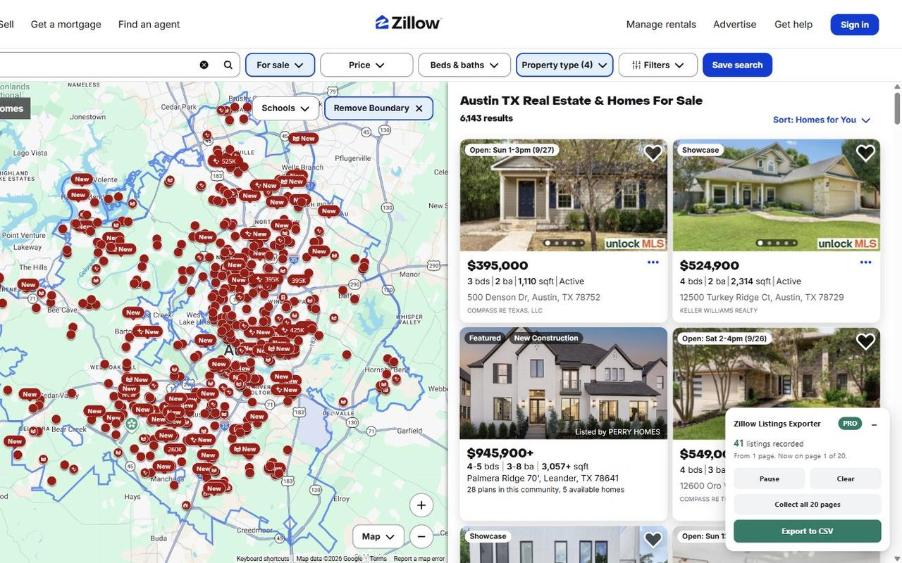
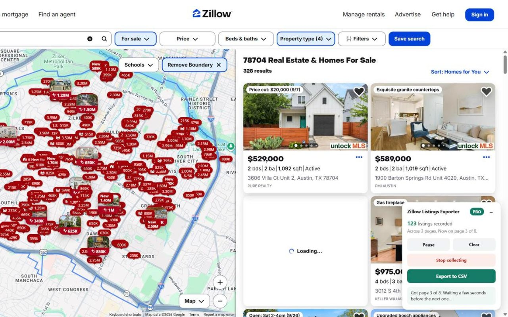

How to export (download) Zillow listings to CSV or Excel
Zillow doesn't let you download search results. The free Zillow Listings Exporter Chrome extension turns any Zillow search (for sale, for rent or recently sold) into a clean spreadsheet in one click, with investor columns like Zestimate, Rent Zestimate and gross yield already filled in.
Built for real estate investors comping deals across a zip code, agents pulling market lists, and anyone who wants Zillow data in Excel or Google Sheets.
Add to Chrome, it's freeFree plan included · No sign-up · Runs only in your browser
Step by step
- Install Zillow Listings Exporter from the Chrome Web Store. Free, no account.
- Run a search on Zillow: homes for sale, for rent, or recently sold, in any area.
- A panel appears on the page showing how many listings it found.
- Click Export. You get a CSV with every column for the page you're on (about 40 listings).
- Need the whole search? Pro turns every page for you and combines them into one file, with duplicates removed.


What's in the spreadsheet
- Price, price per sqft, beds, baths
- Living area and lot size (sqft and acres)
- Zestimate and Rent Zestimate
- Gross yield % (Rent Zestimate × 12 ÷ price)
- Days on Zillow, last price change, date sold
- Home type, status, tax assessed value
- Latitude/longitude, Zillow ID and listing URL
Files are standard CSV with UTF-8 encoding, so they open cleanly in Excel, Google Sheets and Numbers.
Free vs. Pro
Questions
Can I download Zillow listings?
Zillow has no download button for search results. This extension saves them to a CSV file on your computer.
Can I export Zillow search results to Excel?
Yes. The CSV opens directly in Excel or Google Sheets. Prices are plain numbers (450000, not "$450,000"), so formulas and pivot tables work straight away.
Is it free?
Yes. Every column is free for the page you're viewing. Pro adds collecting all pages of a search.
How many listings can I export?
Zillow itself shows at most 20 pages (about 800 homes) per search. To cover a bigger area, zoom the map into one part at a time; with Pro each area adds to the same list.
Why are some sale prices blank?
In states where sale prices aren't public (such as Texas), Zillow doesn't show them, so they can't be exported.
Do I need a Zillow account?
No. It works without logging in, and everything runs in your browser.
Get Zillow Listings Exporter to CSV